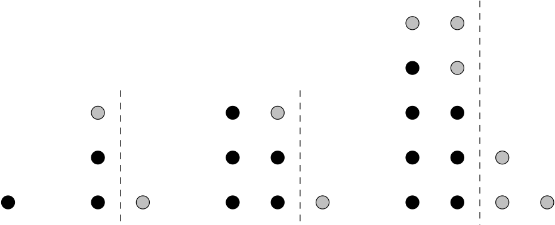
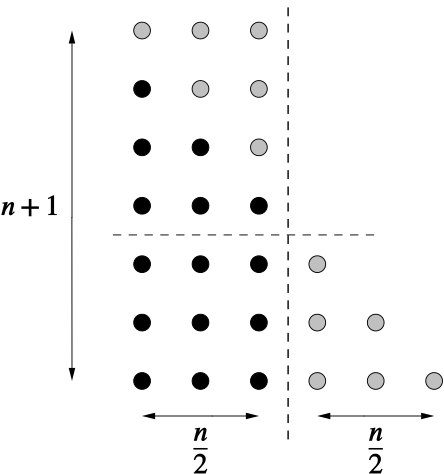
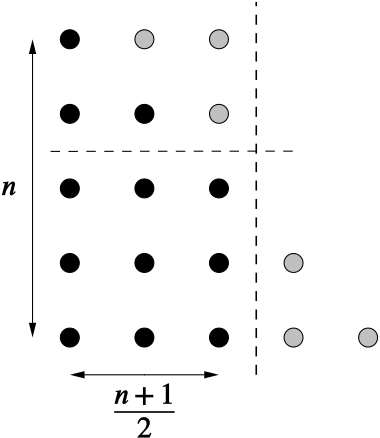

How many ways can you find to justify your answer?
T1
T2
T3
T4
T5
T6
T7
T8
T9
T10
T11
T12
1
3
6
10
15
21
28
36
45
55
66
78
Looking at the first twelve triangular numbers, we see that only 3 is prime, the others are all composite numbers (apart from 1). So our conjecture might be that 3 is the only triangular number which is prime. How can we go about justifying this?
The table above should allow us to see some interesting patterns.
We might notice that
the triangular numbers go in the order two odd, two even, two odd and so on.
in every three numbers, the second and third numbers are divisible by 3.
If these two patterns are true, then in every twelve triangular numbers, there are only two that are not divisible by 2 or 3. Can you explain why these patterns must continue?
that T1 and T2 are divisible by 1, T3 and T4 are divisible by 2, T5 and T6 are divisible by 3, and so on. Is it possible to show this pattern continues?
Can you see why these come in pairs? It might help to think about the recursive relationship of triangular numbers,
Tn=Tn−1+n.
If a rectangle has integer valued sides, then as long as it is not a 1×n rectangle then we know the area cannot be prime, as the lengths of the sides will be factors.
With this in mind, can we rearrange the triangles into rectangles?

We can’t change T1, and we know T2 is prime. We can see there is a difference in how we have split T3 and T4, so let’s group our triangular numbers (Tn) into n being even and n being odd.
Even case:
We’ve seen it works with n=4 so let’s think more generally. If n is even we will be able to split the triangle down the middle of each short side into three sections, a square and two congruent triangles, all with sides of n2.
Regardless of the value of n, we will always be able to put the two triangles together to form a rectangle as they are the same width.

The new rectangle will have dimensions of n2 and n+1, so these will both be factors of the original triangle number. As long as n≥4 then the two factors will be greater than 1 so the triangular number cannot be prime.
Odd case:
This time we cannot split the triangle equally, although we can still split it into a square and two congruent triangles.
Can you see what the factors will be this time?

This time the rectangle will have dimensions of n and n+12, so as long as n≥3 then the two factors will be greater than 1 so it cannot be prime.
You may have noticed that the two factors from each case are very similar. This is because effectively we have found the formula that gives us triangular numbers. For even cases we found it was given by
n2×(n+1)
and for odd cases
n×(n+1)2.
These are the same, and give the general formula,
Tn=n(n+1)2.
If we worked out, or were already familiar with the formula for the nth triangle number, then we might have used this to prove our conjecture.
Tn=n(n+1)2
Similar to the geometric approach we can consider the two cases of n being odd or n being even.
n is odd
If n is odd, then n+1 will be even. Therefore n+12 will be an integer value. So in this case, Tn has factors of n and n+12, as they are both integers. As long as n≥3 then neither factor can be 1, so Tn cannot be prime.
n is even
If n is even, then n2 will be an integer value. So in this case, Tn has factors of n+1 and n2, as they are both integers. As long as n≥4 then neither factor can be 1, so Tn cannot be prime.
This means that there can be no triangular number greater than T2=3 which is also prime.
Another way to think about even and odd numbers is to say that n=2k or n=2k+1. You can substitute these expressions in for n and see what happens. This can be quite a useful way of expressing odd and even numbers that you are likely to come across again.
You might have found that much of the final reasoning of the three different approaches involved some similar algebra. However, how you arrived at that point and the thinking that went on to get there was very different. There are almost always different ways to journey through a problem, and depending on the approach you take, you may gain different insights and understandings compared to someone who took a different route.